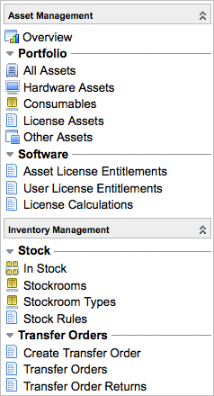

Asset Management
| |
Note: This article applies to Fuji. For more current information, see Asset Management at http://docs.servicenow.com
The Wiki page is no longer being updated. Please refer to http://docs.servicenow.com for the latest product documentation. |
Contents
1 Overview
IT Asset Management (ITAM) integrates the physical, technological, contractual, and financial aspects of information technology assets. ITAM business practices have a common set of goals:
- Control inventory that is purchased and used.
- Reduce the cost of purchasing and managing assets.
- Select the proper tools for managing assets.
- Manage the asset life cycle from planning to disposal.
- Achieve compliance with relevant standards and regulations.
- Improve IT service to end users.
- Create standards and processes for managing assets.
Most successful ITAM programs involve a variety of people and departments, including IT, finance, services, and end users.
Asset management and configuration management (CMDB) are related, but have different goals. Asset management focuses on the financial tracking of company property. Configuration management focuses on building and maintaining elements that create an available network of services.
2 Asset Management Process
The best method for managing assets depends on business needs and how your business is organized. These steps are one possible process for getting started with Asset Management.
- Identify assets in your system. A key component of asset management is the initial and ongoing inventory or discovery of what you own. ServiceNow provides these options for asset discovery:
- The separate, robust Discovery tool.
- A lightweight, native discovery tool, Help the Help Desk, which enables organizations to proactively scan their network to discover all Windows-based PCs and the software packages installed on those PCs. This WMI-based discovery is included in the base self-service application.
- For organizations that want to leverage the discovery technologies they have deployed already, such as SMS, Tally NetCensus, LanDesk, or others, ServiceNow can support integration to those technologies via web services. Scanned data can be mapped directly into the configuration management database (CMDB).
- Clean up information in the CMDB. Remove information that is obsolete or invalid. Ensure that all remaining information is accurate and complete. Add any necessary information.
- Create categories of asset models such as computers, servers, printers, and software.
- Create asset models. Models are specific versions or various configurations of an asset, such as a MacBook Pro 17".
- Create individual assets, such as hardware, consumables, and software licenses. If you used a discovery tool, you may already have many assets identified accurately.
- Manage assets by counting software licenses, viewing assets that are in stock, setting asset states and substates, and analyzing unallocated software.
3 Menus and Modules
Several asset management modules are available in the Asset Management application menu and, starting with the Eureka release, the Inventory Management menu. Prior to the Eureka release, there was no Inventory Management application menu and those modules were in the Asset Management menu. If you are using an older version, see the previous version information.
|  |
Under the Asset Management menu:
Activating Software Asset Management adds the Unallocated Licenses module to the menu.
Activating Field Service Management adds the Personal Stockrooms module to the menu. |
{kind=link}
| |
Note: For information about the user roles necessary to view the different modules, see User Roles. |
3.1 Menus and Modules Prior to the Eureka Release
| Click the plus (+) to expand information for versions prior to the Eureka release | ||||
|---|---|---|---|---|
|
The Asset Management application menu contains modules for using and managing assets.
|
{kind=link}
4 Enhancements
4.1 Fuji
- Users with the asset (Asset manager) role can associate consumables with users.
4.2 Eureka
- The Inventory Management application menu contains asset management modules related to stockrooms and transfer orders.
- If a transfer order has the same source and destination stockroom, its transfer order line automatically moves from the Draft stage to Received if the selected stockroom is not a personal stockroom. The related asset state and substate become In stock and Pending transfer.
4.3 Dublin
- Users can enter an asset depreciation effective date that is in the future.
- Users cannot enter a salvage value greater than the cost of an asset. This prevents negative depreciation amount calculations.
- Administrators can link a software vendor item to the software catalog for viewing.
- Administrators can force the creation of an asset manually from the Model Category form if no asset was created when the asset class was selected.
- Users with the asset role can access reports. These additional global reports on asset information are available: Asset Depreciation, Assets by Department, Assets by Location, Assets under Contract, List of Printers
- A gauge called Pending Asset Retirements replaces the Expiring Asset Contracts gauge, which appears in the Contract Management Overview module.
4.4 Calgary
- Hardware models can now have a depreciation schedule. Based on the information specified in the asset record, the depreciation amount is automatically calculated daily using a scheduled job.
- Hardware models can now have disposal instructions. Information such as retired date, resale price, beneficiary, and disposal reason can be added.
- Fixed assets can now be created as containers for multiple assets. Depreciation can be added to fixed assets.
- When using stock rules and selecting the Vendor restocking option, a task is now created for the stockroom manager in addition to an email notification being sent.
- A new Product Catalog application enables you to organize all information about assets and models, and coordinate with the service catalog. This improves the quality of information and the ordering experience from within the service catalog.
- A new Procurement application enables you to track requests from the service catalog, create and manage purchase orders, source request items, and receive assets.